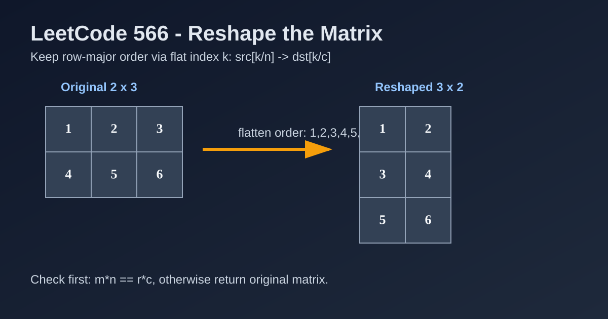

LeetCode 566: Reshape the Matrix (Index Mapping from Flat Order)
LeetCode 566MatrixSimulationIndex MappingToday we solve LeetCode 566 - Reshape the Matrix.
Source: https://leetcode.com/problems/reshape-the-matrix/

English
Problem Summary
Given a matrix mat with size m × n, reshape it to size r × c while keeping all elements in the same row-traversing order. If reshape is impossible, return the original matrix.
Key Insight
Reshape is possible only when total elements match: m*n == r*c. Then treat both matrices as a flattened stream and remap by the same flat index.
Brute Force and Limitations
Building an intermediate flat list works but adds extra memory. We can map indices directly and fill the new matrix in one pass.
Optimal Algorithm Steps
1) Compute m, n; if m*n != r*c, return mat.
2) Create result matrix ans[r][c].
3) For each flat index k in [0, m*n): source is mat[k/n][k%n], target is ans[k/c][k%c].
4) Return ans.
Complexity Analysis
Time: O(m*n).
Space: O(r*c) for output matrix.
Common Pitfalls
- Forgetting feasibility check m*n == r*c.
- Mixing up divisors/modulus for source and target indexing.
- Returning partially built matrix when reshape is impossible.
Reference Implementations (Java / Go / C++ / Python / JavaScript)
class Solution {
public int[][] matrixReshape(int[][] mat, int r, int c) {
int m = mat.length, n = mat[0].length;
if (m * n != r * c) return mat;
int[][] ans = new int[r][c];
for (int k = 0; k < m * n; k++) {
ans[k / c][k % c] = mat[k / n][k % n];
}
return ans;
}
}func matrixReshape(mat [][]int, r int, c int) [][]int {
m, n := len(mat), len(mat[0])
if m*n != r*c {
return mat
}
ans := make([][]int, r)
for i := range ans {
ans[i] = make([]int, c)
}
for k := 0; k < m*n; k++ {
ans[k/c][k%c] = mat[k/n][k%n]
}
return ans
}class Solution {
public:
vector<vector<int>> matrixReshape(vector<vector<int>>& mat, int r, int c) {
int m = mat.size(), n = mat[0].size();
if (m * n != r * c) return mat;
vector<vector<int>> ans(r, vector<int>(c));
for (int k = 0; k < m * n; ++k) {
ans[k / c][k % c] = mat[k / n][k % n];
}
return ans;
}
};class Solution:
def matrixReshape(self, mat: list[list[int]], r: int, c: int) -> list[list[int]]:
m, n = len(mat), len(mat[0])
if m * n != r * c:
return mat
ans = [[0] * c for _ in range(r)]
for k in range(m * n):
ans[k // c][k % c] = mat[k // n][k % n]
return ansvar matrixReshape = function(mat, r, c) {
const m = mat.length, n = mat[0].length;
if (m * n !== r * c) return mat;
const ans = Array.from({ length: r }, () => Array(c).fill(0));
for (let k = 0; k < m * n; k++) {
ans[Math.floor(k / c)][k % c] = mat[Math.floor(k / n)][k % n];
}
return ans;
};中文
题目概述
给定一个 m × n 的矩阵 mat，要求将其重塑为 r × c，并保持按行遍历顺序不变。如果无法重塑，则返回原矩阵。
核心思路
先判断元素总数是否一致：m*n == r*c。若一致，按“扁平下标”k 进行源位置和目标位置映射即可。
暴力解法与不足
可以先展开到一维数组再回填，但会多一次中间存储。直接下标映射更紧凑。
最优算法步骤
1）计算原矩阵大小 m、n，若 m*n != r*c 直接返回原矩阵。
2）创建结果矩阵 ans[r][c]。
3）遍历扁平下标 k：源元素是 mat[k/n][k%n]，目标位置是 ans[k/c][k%c]。
4）填充完成后返回 ans。
复杂度分析
时间复杂度：O(m*n)。
空间复杂度：O(r*c)（结果矩阵）。
常见陷阱
- 忘记先做元素总数相等校验。
- 把源矩阵和目标矩阵的除数/取模写反。
- 不可重塑时返回了半成品结果，而不是原矩阵。
多语言参考实现（Java / Go / C++ / Python / JavaScript）
class Solution {
public int[][] matrixReshape(int[][] mat, int r, int c) {
int m = mat.length, n = mat[0].length;
if (m * n != r * c) return mat;
int[][] ans = new int[r][c];
for (int k = 0; k < m * n; k++) {
ans[k / c][k % c] = mat[k / n][k % n];
}
return ans;
}
}func matrixReshape(mat [][]int, r int, c int) [][]int {
m, n := len(mat), len(mat[0])
if m*n != r*c {
return mat
}
ans := make([][]int, r)
for i := range ans {
ans[i] = make([]int, c)
}
for k := 0; k < m*n; k++ {
ans[k/c][k%c] = mat[k/n][k%n]
}
return ans
}class Solution {
public:
vector<vector<int>> matrixReshape(vector<vector<int>>& mat, int r, int c) {
int m = mat.size(), n = mat[0].size();
if (m * n != r * c) return mat;
vector<vector<int>> ans(r, vector<int>(c));
for (int k = 0; k < m * n; ++k) {
ans[k / c][k % c] = mat[k / n][k % n];
}
return ans;
}
};class Solution:
def matrixReshape(self, mat: list[list[int]], r: int, c: int) -> list[list[int]]:
m, n = len(mat), len(mat[0])
if m * n != r * c:
return mat
ans = [[0] * c for _ in range(r)]
for k in range(m * n):
ans[k // c][k % c] = mat[k // n][k % n]
return ansvar matrixReshape = function(mat, r, c) {
const m = mat.length, n = mat[0].length;
if (m * n !== r * c) return mat;
const ans = Array.from({ length: r }, () => Array(c).fill(0));
for (let k = 0; k < m * n; k++) {
ans[Math.floor(k / c)][k % c] = mat[Math.floor(k / n)][k % n];
}
return ans;
};
Comments